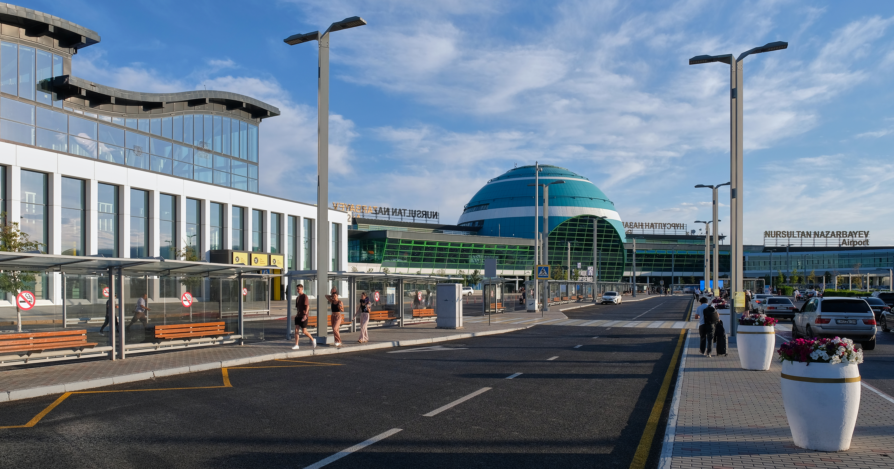
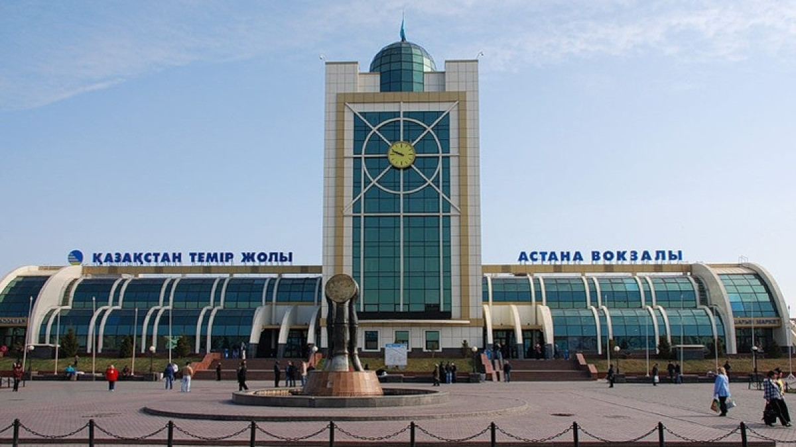
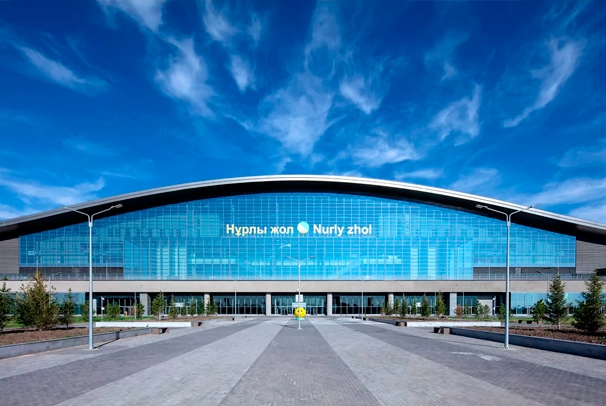

Главные транспортные узлы Астаны
Информация для гостей столицы: ключевые остановки, схемы движения и время ожидания транспорта.

✈️ Международный аэропорт им. Нурсултана Назарбаева
Остановки расположены прямо перед Терминалом 1 (международные рейсы) и Терминалом 2 (внутренние рейсы). Маршруты в сторону города:
| № Маршрута | Ключевые точки (от Аэропорта в город) | Интервал |
|---|---|---|
| № 10 | Аэропорт ➔ стела "Звезда Астаны" ➔ Назарбаев Университет ➔ Ледовый дворец "Алау" ➔ Астана Арена ➔ Ботанический сад ➔ Дворец единоборств имени Жаксылыка Ушкемпирова ➔ ТРЦ Asia-park ➔ Монумент Байтерек ➔ Дом Министерств ➔ Народный банк ➔ Политехнический колледж ➔ Астанинский медицинский университет ➔ Агротехнический университет ➔ Вокзал Астана-1 | 12-15 мин |
| № 12 | Аэропорт ➔ Мечеть Альжан-ана ➔ Мечеть Нурсултан ➔ Больница медицинского центра УДП РК ➔ Астана EXPO ➔ Триумфальная арка ➔ Дом Министерств ➔ Монумент Байтерек ➔ Астана Опера ➔ ТРЦ Saryarka ➔ KeruenCity ➔ Театр Жастар ➔ Вокзал Астана-1 | 10-15 мин |
|
№ 501 Экспресс |
Аэропорт ➔ Жилмассив Пригородный ➔ Космический центр ➔ Назарбаев Университет ➔ Барыс Арена ➔ Национальный научный кардиохирургический центр ➔ ТРЦ Хан-Шатыр ➔ ТРЦ KeruenCity ➔ Парк Астана ➔ Улица 150-летия Абая | 10-15 мин |
| 🚅 LRT (из Аэропорта) | Прямой эстакадный маршрут: Аэропорт ➔ стела "Звезда Астаны" ➔ Назарбаев Университет ➔ Астана Арена ➔ Дворец единоборств имени Жаксылыка Ушкемпирова ➔ Монумент Байтерек ➔ Дом Министерств ➔ Национальный Музей ➔ Вокзал «Нұрлы жол» | Каждые 5 мин |

🚉 Железнодорожный вокзал «Астана-1» (Старый вокзал)
Исторический вокзал в правобережной части города. Для удобства пассажиров привокзальная площадь разделена на 4 зоны остановок.
🚏 Остановка №1
| № Маршрута | Ключевые точки | Интервал |
|---|---|---|
| № 7 | Рынок Орда ➔ Центральный рынок ➔ Республиканская медицинская академия ➔ ТД Алем ➔ Бизнес центр Маржан ➔ Железнодорожный вокзал Астана-1 ➔ Казахский национальный университет искусств ➔ Проспект Женис ➔ Казахский национальный университет искусств ➔ Поликлиника №10 ➔ ЖК Мадрид ➔ Казахский университет технологий и бизнеса ➔ ЖК Жагалау-4 | 10-15 мин |
| № 26 | ЖК Багыстан ➔ Казахская национальная академия хореографии ➔ EXPO-2017 ➔ Барыс Арена ➔ ТРЦ Хан-Шатыр ➔ ТРЦ Saryarka ➔ ТРЦ KeruenCity ➔ парк Астана ➔ Улица Кенесары ➔ ТД Коктем ➔ Астанинский медицинский университет ➔ Гуманитарный юридический колледж ➔ Железножорожный вокзал Астана - 1 ➔ Магазин Айдана | 10-15 мин |
| № 36 | Железнодорожный вокзал Астана-1 ➔ Автовокзал ➔ Гуманитарный юридический колледж ➔ Астанинский медицинский университет ➔ Проспект Богенбай Батыра ➔ Улица Кенесары ➔ Парк Астана 1 ➔ банный комплекс Керемет ➔ улица Бозарал ➔ Республиканская улица Жас-Улан ➔ Очистные сооружения ➔ Улица Назыма Хикмета ➔ Военный городок ➔ Улица Кожаберген жырау ➔ улица Богенбай Батыра(Ильинка) ➔ Улица Магжана Жумабаева(Ильинка) ➔ Улица Батыра Баяна ➔ Жилмассив Караоткель-2 | 10-15 мин |
| № 63 | Железнодорожный вокзал Астана-1 ➔ Астанинский медицинский университет ➔ ТД Асем ➔ ТД Тулпар ➔ ТД Жаннур ➔ Филармония имени Еркегали Рахмадиева ➔ Парк Астана ➔ ТРЦ KeruenCity ➔ ТРЦ Saryarka ➔ Жилой комплекс BI City Tokyo ➔ Поликлиника City ➔ ЖК Шыгыс ➔ ТЦ Мечта ➔ ЖК Меркурий ➔ ЖК Жагалау-4 ➔ Чокина | 10-15 мин |
| № 71 | Микрорайон Отау ➔ Детская больница №2 ➔ городская больница №1 ➔ Улица Бурабай ➔ Улица Кордай ➔ Проспект Магжана Жумабая ➔ ТРЦ Евразия ➔ площадь Защитников Отечества ➔ Микрорайон Целинный ➔ ТД Жаннур ➔ Рынок Астаналык ➔ Поликлиника №1 ➔ Улица Московская ➔ Магазин Айдана ➔ Улица Окжетпес ➔ Рынок Астаналык ➔ Поликлиника №1 ➔ Проспект Женис ➔ Железнодорожный вокзал Астана-1 ➔ Улица Куляш Байсеитовой ➔ Школа №58 ➔ Улица Медеу ➔ Жилмассив Коктал-2 ➔ Улица Карасу ➔ Tulpar City | 10-15 мин |
| № 81 | Рынок Орда ➔ Центральный рынок ➔ ТЦ Алем ➔ Политехнический колледж ➔ Железнодорожный вокзал Астана-1 ➔ Улица Конституции ➔ Улица Медеу ➔ Детский сад Болашак ➔ Специализированный ЦОН | 15-20 мин |
🚏 Остановка №2
| № Маршрута | Ключевые точки | Интервал |
|---|---|---|
| № 3 | Вокзал Астана-1 ➔ ЦОН Сарыаркинского района ➔ Народный банк ➔ Военно-Исторический музей ВС РК ➔ площадь Защитников Отечества ➔ ТРЦ Астана-молл ➔ дом студентов МГУ ➔ ЖК Balausa ➔ Вокзал «Нұрлы жол» | 10-12 мин |
| № 14 | Вокзал Астана-1 ➔ Национальный Театр Опера и Балета имени Куляш Байсеитовой ➔ ТЦ Асем ➔ ТЦ Тулпар ➔ Евразийский национальный университет ➔ ТРЦ Евразия ➔ Дворец Независимости ➔ Вокзал «Нұрлы жол» ➔ ЖК Эльбрус | 10-15 мин |
| № 19 | Вокзал Астана-1 ➔ ЦОН Сарыаркинского района ➔ дворец жастар ➔ рынок Астаналык ➔ ТЦ Жаннур ➔ Евразийский национальный университет ➔ Городская поликлиника №6 ➔ Мечеть Хазрет Султан ➔ Дом министерств ➔ Казахконцерт имени Розы Баглановы ➔ Жилмассив Тельман | 10-15 мин |
| № 22/22a | Вокзал Астана-1 ➔ Агротехнический университет ➔ ТЦ Тулпар ➔ ТЦ Алем ➔ Институт травматологии и ортопедии ➔ Городская больница № 1 ➔ Жилмассив Железнодорожный | 10-15 мин |
| № 31 | Вокзал Астана-1 ➔ Казахский национальный университет искусств ➔ Филармония имени Рахмадиева ➔ площадь Защитников Отечества ➔ ТД Орбита ➔ ТЦ Евразия ➔ Национальный научно-мединский центр ➔ ЖК Кернай | 10-15 мин |
| № 37 | Космический центр ➔ стела "Звезда Астаны" ➔ Назарбаев университет ➔ Дворец единоборств имени Жаксылыка Ушкемпирова ➔ Кардиохирургический центр ➔ ЦОН Сарыаркинского района ➔ Детская поликлиника №3 ➔ Агротехнический университет ➔ Вокзал Астана-1 ➔ Астанаинерт | 10-15 мин |
| № 40 | Вокзал Астана-1 ➔ Казахский национальный университет искусств ➔ Рынок Астаналык ➔ Институт травматологии и ортопедии ➔ ТРЦ Евразия ➔ ТРЦ Астана-молл ➔ Мечеть Хазрет Султан ➔ Дворец мира и согласия ➔ Дом Министерств ➔ Казахконцерт имени Розы Баглановы ➔ Министерство обороны ➔ ТРЦ Keruen ➔ Центр нового поколения Sana ➔ Барыс Арена ➔ Общежитие Назарбаев Университета ➔ Городская больница №2 ➔ Многопрофильная больница №3 ➔ ТРЦ KeruenCity | 10-15 мин |
| № 48 | Вокзал Астана-1 ➔ ТЦ Асем ➔ ТЦ Тулпар ➔ ТЦ Жаннур ➔ Микрорайон Целинный ➔ площадь Защитников Отечества ➔ ТД Орбита ➔ Евразийский национальный университет ➔ ТД Гульжан ➔ Городская поликлиника №7 ➔ Улица Буктырма ➔ Городская больница №1 ➔ Детская больница №2 ➔ Улица Бастобе Вокзал «Нұрлы жол» | 10-15 мин |
| № 83 | Вокзал Астана-1 ➔ Дворец Жастар ➔ ТЭЦ-1 ➔ Вагоноремонтный завод ➔ Посёлок Ондерис ➔ Разъезд №39 | 10-15 мин |
🚏 Остановка №3
| № Маршрута | Ключевые точки | Интервал |
|---|---|---|
| № 12 | Вокзал Астана-1 ➔ Театр Жастар ➔ KeruenCity ➔ ТРЦ Saryarka ➔ Астана Опера ➔ Монумент Байтерек ➔ Дом Министерств ➔ Триумфальная арка ➔ Астана EXPO ➔ Больница медицинского центра УДП РК ➔ Мечеть Нурсултан ➔ Мечеть Альжан-ана ➔ Аэропорт | 10-15 мин |
| № 21 | Вокзал Астана-1 ➔ Театр Жастар ➔ Казахский национальный университет искусств ➔ Министерство финансов ➔ Центр семейного отдыха Ailand ➔ Монумент Байтерек ➔ Дом Министерств ➔ АО Kegoс ➔ Театр имени Калибека Куанышбаева ➔ Вокзал «Нұрлы жол» ➔ ЖК Burabay | 10-15 мин |
|
№ 502 Экспресс |
Вокзал Астана-1 ➔ ТЦ Алем ➔ ТЦ Жаннур ➔ Детская больница №1 ➔ Мечеть Хазрет Султан ➔ AO Kegoc ➔ ЖК Багыстан | 10-15 мин |
🚏 Остановка №4
| № Маршрута | Ключевые точки | Интервал |
|---|---|---|
| № 9 | Вокзал Астана-1 ➔ Агротехнический университет ➔ Астанинский медицинский университет ➔ Политехнический колледж ➔ Поликлиника №1 ➔ Филармония имени Еркегали Рахмадиева ➔ ГТЦ Астанателеком ➔ Институт травматологии и ортопедии ➔ ТД Гульжан ➔ ТД Айтолкын ➔ Городская поликлиника №7 ➔ Детская больница №2 ➔ Детский сад Даурен | 10-15 мин |
| № 10 | Вокзал Астана-1 ➔ Агротехнический университет ➔ Астанинский медицинский университет ➔ Политехнический колледж ➔ Народный банк ➔ Дом Министерств ➔ Монумент Байтерек ➔ ТРЦ Asia-park ➔ Дворец единоборств имени Жаксылыка Ушкемпирова ➔ Ботанический сад ➔ Астана Арена ➔ Ледовый дворец "Алау" ➔ Назарбаев Университет ➔ стела "Звезда Астаны" ➔ Аэропорт | 12-15 мин |
| № 23 | Вокзал Астана-1 ➔ Агротехнический университет ➔ Астанинский медицинский университет ➔ Политехнический колледж ➔ Поликлиника №1 ➔ Филармония имени Еркегали Рахмадиева ➔ Военно-Исторический музей ВС РК ➔ Площадь Защитников Отечества ➔ ТД Орбита ➔ ТРЦ Евразия ➔ Евразийский национальный университет ➔ Акмолинская областная больница №2 | 12-15 мин |
| № 25 | Вокзал Астана-1 ➔ Театр Жастар ➔ Казахский национальный университет искусств ➔ Филармония имени Еркегали Рахмадиева ➔ Военно-исторический музей ВС РК ➔ Площадь Защитников Отечества ➔ ТД Орбита ➔ Евразийский национальный университет ➔ Гуманитарный колледж ➔ ТОО Теплотранзит | 12-15 мин |

🏢 Вокзал «Нұрлы жол» (Новый вокзал)
Новый современный вокзальный комплекс на Левом берегу. Полный список маршрутов и городского транспорта:
| № Маршрута | Ключевые точки | Интервал |
|---|---|---|
| № 2 | ЖК Burabay ➔ Вокзал «Нұрлы жол» ➔ Жилмассив Промышленный ➔ ТРЦ Астана-молл ➔ площадь Защитников Отечества ➔ Спортивный комплекс Алатау ➔ ГТЦ Астанателеком ➔ ТЦ Жаннур ➔ ЦОН Сарыаркинского района ➔ ТД Коктем ➔ ЖК Коктем | 10-15 мин |
| № 3 | Вокзал «Нұрлы жол» ➔ ЖК Balausa ➔ дом студентов МГУ ➔ ТРЦ Астана-молл ➔ площадь Защитников Отечества ➔ Военно-Исторический музей ВС РК ➔ Народный банк ➔ ЦОН Сарыаркинского района ➔ Жилмассив Коктал | 10-15 мин |
| № 11 | Вокзал «Нұрлы жол» ➔ городская больница №1 ➔ Национально-научный медицинский университет ➔ ТД Гульжан ➔ институт травматологии и ортопедии ➔ улица Александра Пушкина ➔ Мясоперерабатывающий завод ➔ ТЭЦ 2 ➔ Центральный рынок ➔ Жилмассив Кирпичный | 10-15 мин |
| № 14 | ЖК Эльбрус ➔ Вокзал «Нұрлы жол» ➔ Дворец Независимости ➔ ТРЦ Евразия ➔ Евразийский национальный университет ➔ ТЦ Тулпар ➔ ТЦ Асем ➔ Национальный Театр Опера и Балета имени Куляш Байсеитовой ➔ Вокзал Астана-1 | 10-15 мин |
| № 21 | ЖК Burabay ➔ Вокзал «Нұрлы жол» ➔ Театр имени Калибека Куанышбаева ➔ AO Kegoc ➔ Дом Министерств ➔ Монумент Байтерек ➔ Центр семейного отдыха Ailand ➔ Министерство финансов ➔ Казахский национальный университет искусств ➔ Театр Жастар ➔ Вокзал Астана-1 | 10-15 мин |
| № 32 | Улица Болашак ➔ Мечеть Коктал ➔ Поликлиника №10 ➔ Стадион имени Кажымукана Мунайтпасова ➔ Филармония имени Еркегали Рахмадиева ➔ Центр семейного отдыха Ailand ➔ ТРЦ KeruenCity ➔ ТРЦ Saryarka ➔ Астана Опера ➔ ТРЦ Хан-Шатыр ➔ Кардиохирургический Центр ➔ Дворец Независимости ➔ Театр имени Калибека Куанышбаева ➔ Вокзал «Нұрлы жол» ➔ ЖК Эльбрус | 10-15 мин |
| № 48 | Вокзал «Нұрлы жол» ➔ Улица Бастобе ➔ Детская больница №2 ➔ Городская больница №1 ➔ Улица Буктырма ➔ Городская поликлиника №7 ➔ ТД Гульжан ➔ Евразийский национальный университет ➔ ТД Орбита ➔ площадь Защитников Отечества ➔ Микрорайон Целинный ➔ ТЦ Жаннур ➔ ТЦ Тулпар ➔ ТЦ Асем ➔ Вокзал Астана-1 | 10-15 мин |
| № 50 | Вокзал «Нұрлы жол» ➔ Поликлиника №10 ➔ Парк Астана ➔ ТРЦ KeruenCity ➔ ТРЦ Saryarka ➔ Астана Опера ➔ ТРЦ Хан-Шатыр ➔ Национальный кардиохирургический центр ➔ Улица Ханов Керея и Жанибека ➔ ТРЦ Keruen ➔ Монумент Байтерек ➔ Дом Министерств ➔ Президентский парк ➔ Улица Кенена Азербаева ➔ Вокзал «Нұрлы жол» ➔ Жилмассив Промышленный | 10-15 мин |
| № 57 | ЖК Коктем ➔ Улица Мухамеджана Тынышбаева ➔ Улица Рахымжана Кошкарбаева ➔ Бизнес центр Downtown ➔ Кардиохирургический центр ➔ Бизнес центр Saad ➔ улица Толе би ➔ ЖК Ак-Дидар | 10-15 мин |
| № 60 | Вокзал «Нұрлы жол» ➔ ЖК Balausa ➔ Казахская национальная академия хореографии ➔ Дворец правосудия ➔ Ботанический сад ➔ Астана Арена ➔ ТРЦ Keruen ➔ Казахконцерт имени Розы Баглановой ➔ Дом Министерств ➔ Спортивный комплекс Алатау ➔ Институт травматологии и ортопедии ➔ ТД Гульжан ➔ ТД Айтолкын ➔ Городская поликлиника №7 ➔ Школа №63 | 10-15 мин |
| № 66 | Вокзал «Нұрлы жол» ➔ ЖК Balausa ➔ Улица Кенена Азербаева ➔ Национальный музей ➔ AO Kegoc ➔ Мост тауелсиздик ➔ Дворец Тилеп Кобыз ➔ Национальный кардиохирургический центр ➔ Центр нового поколения Sana ➔ ТРЦ Хан-Шатыр ➔ Мечеть Аль-фаттах ➔ Национальный центр биотехнологии ➔ Университет КАЗГЮУ ➔ Республиканская школа Жас-Улан ➔ Очистные сооружения ➔ Микрорайон Уркер ➔ Улица Е-584 ➔ ТД Adil ➔ Афганский квартал | 10-15 мин |
| № 75 | Вокзал «Нұрлы жол» ➔ Микрорайон Отау ➔ Жилмассив Достык ➔ Детский сад Даурен ➔ Жилмассив Мичурино ➔ Жилмассив Куйгенжар | 10-15 мин |
|
№ 503 Экспресс |
Вокзал «Нұрлы жол» ➔ ЖК Сарайшык ➔ ТРЦ Евразия ➔ ТД Орбита ➔ Микрорайон Самал ➔ Народный банк ➔ Поликлиника №5 ➔ Завод пенопласт ➔ Астанаинерт | 10-15 мин |
|
№ 507 Экспресс |
Вокзал «Нұрлы жол» ➔ ЖК Байтурсын ➔ Дворец искусств Шабыт ➔ Дом Министерств ➔ Мечеть Абу Насыр аль-Фараби ➔ Бизнес центр Saad ➔ ЖК Жагалау-4 | 10-15 мин |
|
№ 508 Экспресс |
Вокзал «Нұрлы жол» ➔ ЖК Balausa ➔ Улица Кенена Азербаева ➔ Дом Министерств ➔ ЖК Bi City Tokyo ➔ Казахский университет технологии и бизнеса ➔ УМТО | 10-15 мин |
| 🚅 LRT (с Вокзала) | Прямой эстакадный маршрут: Вокзал «Нұрлы жол» ➔ Национальный Музей ➔ Дом Министерств ➔ Монумент Байтерек ➔ Дворец единоборств имени Жаксылыка Ушкемпирова ➔ Астана Арена ➔ Назарбаев Университет ➔ стела "Звезда Астаны" ➔ Аэропорт | Каждые 5 мин |
Лайфхак для путешественников: Внезапная скука?
Если вы уже посмотрели Байтерек, обошли все ТРЦ и вам стало совсем скучно в Астане — садитесь на автобус № 64 и отправляйтесь в незабываемое путешествие прямо на Завод по производству мебели! Непревзойдённый индустриальный вайб и красивые виды гарантированы!